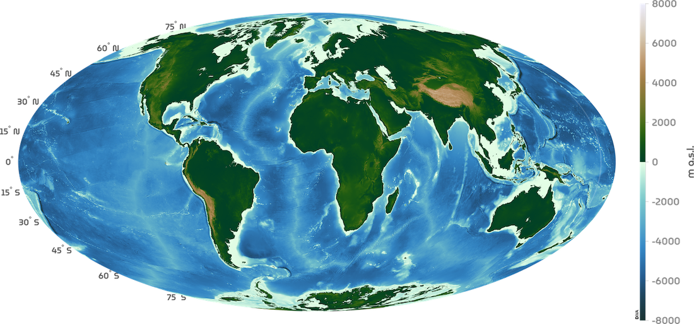
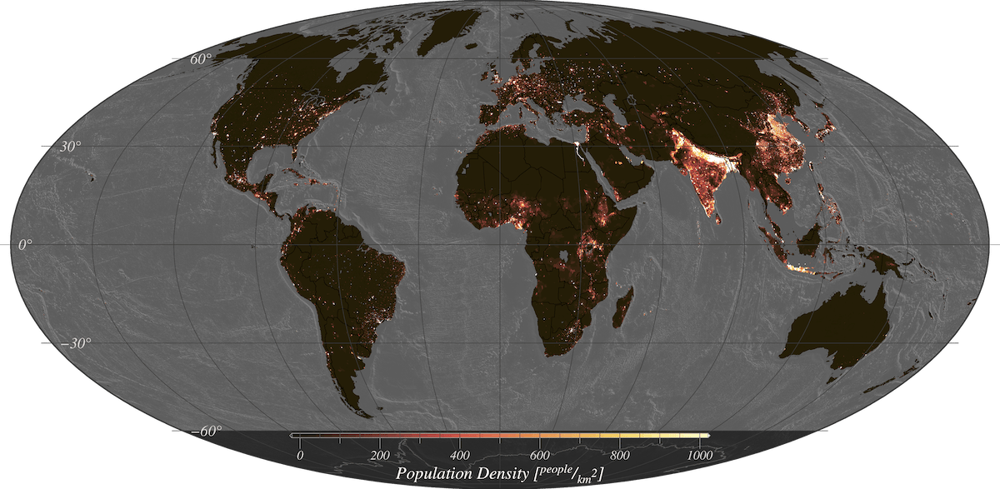

Zwei Weltkarten
Wähle eine Karte. Du kannst jederzeit zur anderen wechseln.
Karten werden geladen.
Zum Verschieben im Bild scrollen. Mit der Tastatur: Kartenbereich auswählen und die Pfeiltasten verwenden.


Surface topography · Fabio Crameri, 01.09.2021. Mollweide-Projektion. Datenmodell ETOPO1, Amante und Eakins (2009), 1 Bogenminute. Grafik nach Crameri, Shephard und Heron (2020). Unveränderte Grafik von s-Ink · Originalbild · CC BY-SA 4.0.
Population density · Eivind O. Straume, 01.06.2022. Bevölkerungsdichte für 2020, Raster A mit 2,5 Bogenminuten. Daten: GPWv4, Population Density, Beta Release (NASA SEDAC). Unveränderte Grafik von s-Ink · Originalbild · CC BY-SA 4.0.